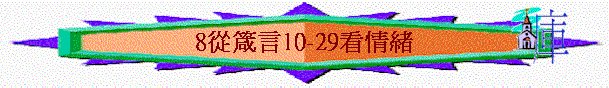

|
所羅門箴言第一集 |
所羅門箴言第二集 |
所羅門箴言第三集 |
其他人的言語附篇 |
|
1 - 9 |
10-24 |
25-29 |
30-31 |
「不輕易發怒的，勝過勇士；治服己心的，強如取城。」16:32
～在箴言10-29中提及很多關乎----心/情緒的事，一個人能治服自己的心；控制它，強如攻取一個城
一.勝過怒氣
1.發怒原因
A.人的性情
「不輕易發怒的，大有聰明；性情暴躁的，大顯愚妄。」14:29
B.愚妄本相
「愚妄人的惱怒立時顯露；通達人能忍辱藏羞。」12:16
C.言語觸動
「回答柔和，使怒消退；言語暴戾，觸動怒氣。」15:1
D.人的煽惑
「褻慢人煽惑通城；智慧人止息眾怒。」29:8
2.過怒無益
A.行事愚妄
「輕易發怒的，行事愚妄；設立詭計的，被人恨惡。」14:17
「不輕易發怒的，大有聰明；性情暴躁的，大顯愚妄。」14:29
B.挑啟爭端
「好氣的人挑啟爭端；暴怒的人多多犯罪。」29:22
C.多多犯罪
「好氣的人挑啟爭端；暴怒的人多多犯罪。」29:22
D.必受刑罰
「暴怒的人必受刑罰；你若救他，必須再救。」19:19
3.勝過方法
A.治服己心
「不輕易發怒的，勝過勇士；治服己心的，強如取城。」16:32
B.要有見識
「人有見識就不輕易發怒；寬恕人的過失便是自己的榮耀。」19:11
～知道發怒的無益，知道寬恕人的榮耀
C.要願寬恕
「人有見識就不輕易發怒；寬恕人的過失便是自己的榮耀。」19:11
D.回答柔和
「回答柔和，使怒消退；言語暴戾，觸動怒氣。」15:1
二.超越憂愁
1.憂愁原因
A.受著困苦
「困苦人的日子都是愁苦；心中歡暢的，常享豐筵。」15:15
B.所盼未臨
「所盼望的遲延未得，令人心憂；所願意的臨到，卻是生命樹。」13:12
C.快樂至極
「人在喜笑中，心也憂愁；快樂至極就生愁苦。」14:13
D.兒女愚昧
「生愚昧子的，必自愁苦；愚頑人的父毫無喜樂。」17:21
2.憂愁後果
A.骨也枯乾
「喜樂的心乃是良藥；憂傷的靈使骨枯乾。」17:22
B.人擔不起
「人有疾病，心能忍耐；心靈憂傷，誰能承當呢？」18:14
C.非神原意
「耶和華所賜的福使人富足，並不加上憂慮。」10:22
3.除憂之法
A.喜樂的心
「喜樂的心乃是良藥；憂傷的靈使骨枯乾。」17:22
B.神賜的福
「耶和華所賜的福使人富足，並不加上憂慮。」10:22
C.別人良言
「人心憂慮，屈而不伸；一句良言，使心歡樂。」12:25
三.常常喜樂
1.喜樂的特質
A.在人心裡
「心中的苦楚，自己知道；心裡的喜樂，外人無干。」14:10
B.與人無干
「心中的苦楚，自己知道；心裡的喜樂，外人無干。」14:10
～分享及擁有你的喜樂，喜樂是個人的
C.面也流露
「心中喜樂，面帶笑容；心裡憂愁，靈被損傷。」15:13
2.快樂之道
A.管教兒女
「義人的父親必大得快樂；人生智慧的兒子，必因他歡喜。」23:24
「管教你的兒子，他就使你得安息，也必使你心裡喜樂。」29:17
B.追求智慧
「愚妄人以行惡為戲耍；明哲人卻以智慧為樂。」10:23
C.使人和睦
「圖謀惡事的，心存詭詐；勸人和睦的，便得喜樂。」12:20
D.愛聽良言
「人心憂慮，屈而不伸；一句良言，使心歡樂。」12:25
E.義人增多
「義人增多，民就喜樂；惡人掌權，民就歎息。」29:2